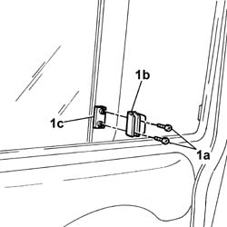

7020C26 sliding door window glass closure device - r+r
- Path
- Procedures > 70 FITTINGS > 7020 LOAD CARRYING COMPARTMENT DOORS > 7020C sliding side door > 7020C26 sliding door window glass closure device - r+r
- Kind
- repair procedure (removal / refitting; the operation number is the code)
- Applies to
- all engines; all production periods
- Interactive page
- https://sloeber94.github.io/elrnDB-fDbl/en/#/2585057
Applies to: all engines; all production periods; only with equipment: Doblò trim level
 Removing
Removing
 Refitting
Refitting1. Undo the bolts (1a) and remove the device (1b), recovering the mounting (1c).

Applies to: all engines; all production periods; only with equipment: Doblò trim level
Refitting
RemovingFit the device and secure it to the mounting using the bolts.